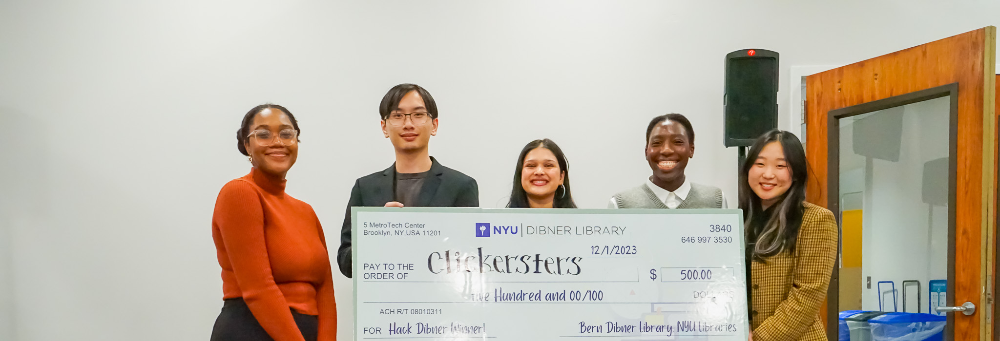
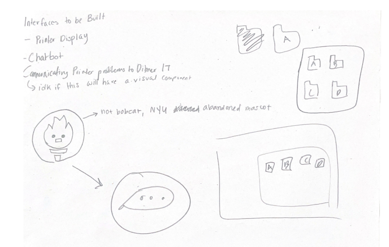
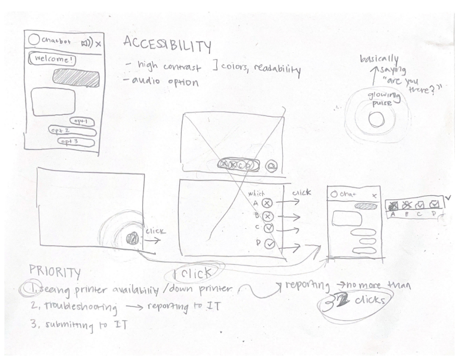
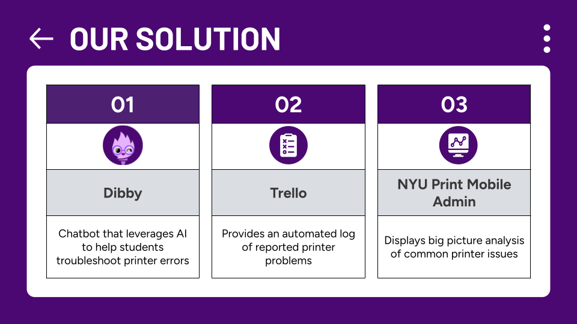

<<< go back
Developed AI Chatbot to Streamline Printing Needs
Our team won 1st place and audience favorite at the 2023 Hack Dibner competition. We went through rounds of surveys, user interviews, ideation, prototyping, and testing to create Dibby: a friendly AI chatbot that streamlines the printing experience for all students and staff at Dibner Library.
ROLE
Project Manager and User Experience Designer
FOR
Hackathon competition
SOFTWARE(S)
Figma, Adobe Suite (Illustrator, AfterEffects), Trello
TIMELINE
Sep - Dec 2023

PROBLEM
There is no easy way for NYU Dibner patrons to report or solve printer issues, and it is difficult for Dibner IT staff to identify and address these issues.
SOLUTION
Dibby: an AI Chatbot that streamlines printing needs and provides an automated log of printer problems to staff.
TASKS
Ideation, user research, journeymaps, project management, wireframes, high-fidelity Figma deliverables, user testing, motion graphic animations
IMPACT
Out of 3 extensive user tests, 0% were able to successfully troubleshoot a printer error regularly, but after access to Dibby, all 3 students (100% improvement) were able to troubleshoot the error within minutes.
USER RESEARCH + SURVEYS

75% of Tandon students use Dibner as their primary printing location. When our team went out and spoke with these students though, we found that 72% have experienced printing issues.
.png)
In the beginning of our project, we surveyed Dibner patrons, asking them about their biggest qualms with the library. 73% spoke about printing, validating that this was an issue truly affecting our student body.
.png)
After hearing about her frustration, we knew this problem needed a solution. Our team also conducted various literature reviews on other research papers for our project. Because we are leveraging AI to build this chatbot, we had to make sure our designs were protecting our users' privacy, and maintaining features of accessibility throughout our front end.
IDEATION

I took accessibility and prioritization into account while designing the wireframes, planning out high-contrast features and also minimizing the amount of interactions a user needs in order of priority for their printing needs.

Based on our research, we decided to not use generative AI for our project. Because we do not want to risk students trying to troubleshoot on their own and risk damaging the hardware, we grouped our AI model using Natural Language Processing and grouped common printer issues problems into buckets. This way, students were only given software-related troubleshooting options rather than being able to fiddle with the hardware. In situations where there were problems with the hardware, Dibby would automatically contact and alert an IT professional to fix the problem.
PROTOTYPING
When designing Dibby’s frontend, we prioritized accessibility. At the advice of Sam Putnam, the Director of Dibner Library, we designed Dibby in compliance with the industry standard guidelines for accessibility, to ensure all students could use our product. The printer display is always visible and communicates print status without relying solely on color. Dibby is hosted on NYU Mobile Print, eliminating the need to visit a separate website. Additionally, we incorporated suggested responses to minimize the typing users would have to do. Finally, we confirmed our product’s user-friendliness through testing, ensuring seamless navigation for first-time users.
FEATURES

USER TESTING
To check our product’s efficacy, we conducted 3 user tests. Students were presented with a printer error– 2 attempted to google an answer and the third abandoned the printer. None successfully fixed or reported the issue. However, when given access to Dibby, all 3 students were able to successfully troubleshoot the error within a matter of minutes.
STAFF IMPACT
Dibby will streamline communication by automatically notifying Dibner IT staff of reported printing issues through an upload to a Trello board. We learned from Kanishk Pandey that Trello is the tool Dibner IT uses for task management. This will create a centralized log of printer issues, helping IT staff address them efficiently. Additionally, we learned from Kanishk that the lack of data on recurring printer errors hinders IT staff from identifying underlying printer issues. Dibby addresses this by collecting reports of printer issues and generating monthly analysis for IT staff, providing them with perspective on printers performance. This will empower IT staff to address the large scale issues.
FEASABILITY
Dibby will be very easy to implement. The AI model we implemented improves over time as it gains more knowledge about printer issues, ensuring Dibby is a future-proof investment. Another benefit of Dibby is that it seamlessly integrates with our client, Dibner IT’s, existing systems, such as NYU Print Mobile Admin and Trello. This means staff won’t have to receive training on yet another tool. Finally, Dibby will cause minimal strain on our client's budget as it’s extremely low cost, only requiring a server to run on and minimal maintenance after it’s been built.